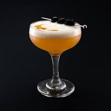

Amaretto Sour

This is what you need to make an Amaretto Sour:
If you’re a fan of sweet and almond flavors, like marzipan, the amaretto sour is worth a try for your next nightcap or dinner party drink.
Ingredients
- 2 ounces amaretto
- 1 ounce fresh lemon juice
- 1 egg white (optional)
- Ice, for the shaker and for serving
- Lemon wheel, for garnish
- Brandied cherry, for garnish
- Shake the ingredients together:
- Strain the cocktail into a rocks glass filled with ice, giving the shaker a few hard shakes to get as much foam out as possible. Garnish with a lemon wheel and brandied cherry.